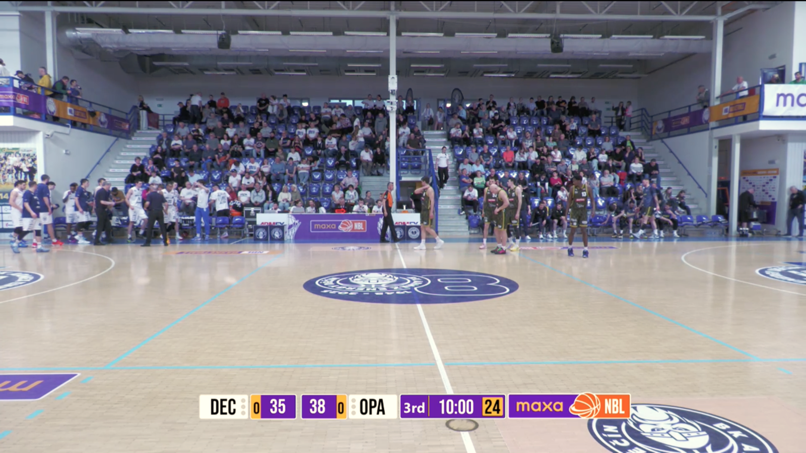
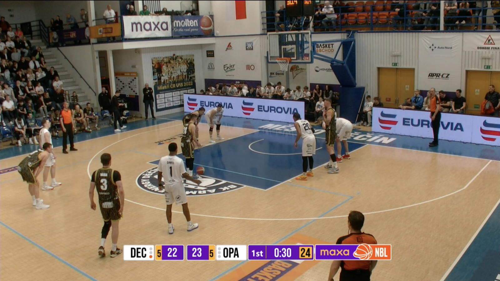

| Hráč | Tým | Body | FGM/FGA | FG% | FTM/FTA | As. | Dosk. |
|---|---|---|---|---|---|---|---|
| Alexander | Děčín | 22 | 8/15 | 53.3% | 4/4 | 6 | 4 |
| Kouřil | Opava | 19 | 6/12 | 50.0% | 5/6 | 3 | 2 |
| Šiřina | Opava | 14 | 5/11 | 45.5% | 2/3 | 6 | 5 |
| Edwards | Děčín | 12 | 4/9 | 44.4% | 2/2 | 2 | 7 |
| Brown Jr | Opava | 11 | 4/8 | 50.0% | 1/2 | 4 | 6 |

| FGM-FGA | FG% | |
|---|---|---|
| Dnes | 9/16 | 56.3% |
| Sezóna | 19/48 | 76.3% |
| Top adresáti | AST | Body |
|---|---|---|
| Jan Švandrlík | 25 | 72 |
| Clevon Brown Jr | 21 | 48 |
| W. Lavon Person Jr | 19 | 50 |
| Šimon Puršl | 14 | 28 |
| Marek Vyroubal | 11 | 30 |